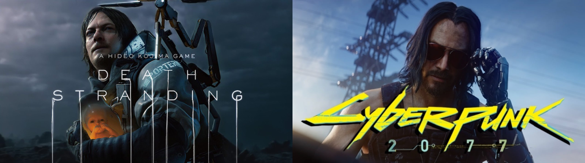
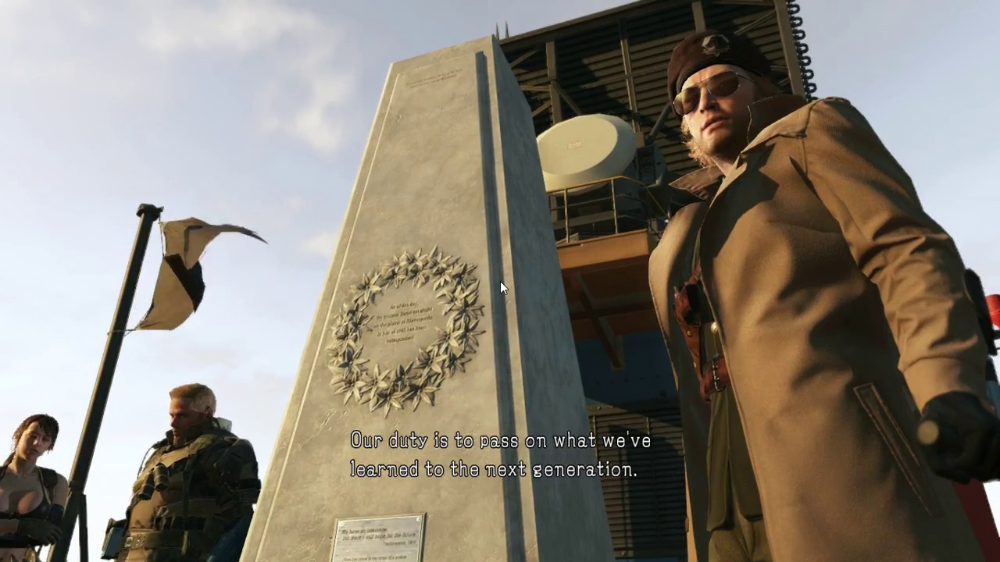
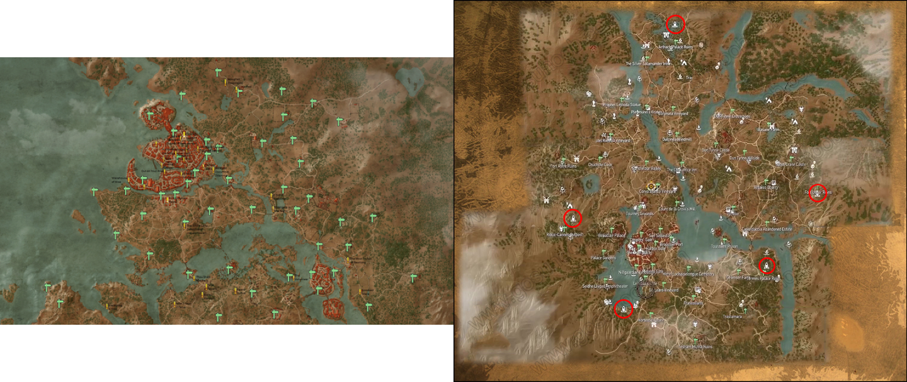

美得讓人窒息
關於標題的意義請看 標題的意義

E3 電玩展開始了，今年我也是只能蹲在台灣看各方報導過過乾癮。
繼已經發售的《地鐵：離鄉》，我最期待的兩款遊戲終於公布發售日期了。《Death Stranding》訂在今年（2019）11 月 8 日，《Cyberpunk 2077》發售日訂在明年（2020）4 月 16 日。發售日期訂下來當然是好事，但我原本預期「三款遊戲如果都在 2019 年推出就死而無憾了」的幻想注定破滅了。
由於最近工作上剛經歷了不小的變化，忙到連 RSS 都沒有時間看，要不是同事提醒可能整個錯過今年的 E3 都不知道。
《Death Stranding》官方中文譯名《死亡擱淺》，老實說我比較喜歡之前流行的「死亡之絆」，畢竟小島爸爸（小島秀夫）再三強調這是一款注重「羈絆」的遊戲。不管之前再怎麼守口如瓶，E3 這麼重要的場合，如果再不放出個預告片或是實機畫面，小島工作室的營銷就要跟小島爸爸拚命了。
“Death Stranding” is a completely new type of action game, where the goal of the player is to reconnect isolated cities and a fragmented society. It is created so that all elements, including the story and gameplay, are bound together by the theme of the “Strand” or connection. As Sam Porter Bridges, you will attempt to bridge the divides in society, and in doing create new bonds or “Strands” with other players around the globe. Through your experience playing the game, I hope you’ll come to understand the true importance of forging connections with others.
Now, please enjoy the latest Death Stranding trailer.
果不其然，整部預告片看完還是一頭霧水。可以，這很小島秀夫。
網路上當然出現了很多嘗試分析《死亡擱淺》世界觀與遊戲機制的影片與文章，但小島爸爸的心思豈是能讓大家這麼容易猜測到的？
當然，有人猜測所謂的「羈絆」，是否代表全世界的玩家必須一起完成某件任務？這不是沒有道理，因為小島爸爸還在 Konami 時創作的作品《潛龍諜影：幻痛》時就有一個「全球無核」的結局，需要全世界的玩家將核彈數量削減到零才能觸發——光用想的就可以知道這是一個多麼困難的條件。

取自 kotaku
全世界的玩家，要是有玩家玩到一半棄坑了不就永遠都不可能達成了？
還真別小看人類一旦團結起來的意志力，去年（2018）12 月底，來自世界各地的玩家還就真的觸發了這個看似遙不可及的隱藏版結局。
Metal Gear Solid V’s Nuclear Disarmament event unlocked on consoles
看完看了也看不懂的《死亡擱淺》，來看看沒有那麼難懂的《cyberpunk 2077》。《Cyberpunk 2077》中文譯名《電馭叛客 2077》，如果是對科幻作品，不管是電影、小說還是遊戲有興趣的人，一定看過或聽過這種作品風格。到底什麼是 cyberpunk？來自左邊鄰居一個專門介紹遊戲的媒體有一篇文章寫得非常好，值得一讀：
“某些核心主题在赛博朋克作品中反复出现，例如身体入侵：假肢、植入电路、整容手术和基因改变，甚至还包括心灵入侵主题：脑机接口、人工智能、神经化学——这些技术从根本上重新定义了人性和自我的本质。”
赛博朋克将这些先进技术与现实社会问题进行了结合，例如毒品、廉价酒吧和驱使人走向犯罪的绝望心理等。在赛博朋克的世界里，统治阶层几乎总是那些控制着技术的巨型公司，而主角往往是游走于社会边缘的局外人，例如罪犯或黑色电影风格的反英雄角色。斯特令曾这样总结赛博朋克世界的特点：“高科技、低生活。”
這次公布的預告片結尾，出現了最近剛在《捍衛任務 3：全面開戰》中再度殺遍四方的基努·李維。本人甚至在預告片播放完畢後親臨現場，現場歡聲雷動，甚至出現了一段有趣的小插曲。
CDPR 在事後贈送了一份免費的《電馭叛客 2077》給這位瘋狂的粉絲。
CDPR 贈送《電馭叛客 2077》典藏版給對著基努李維大喊「你美到窒息」的粉絲 🎁
CDPR 之前的作品就是大名鼎鼎的《巫師》系列，雖然按照原著小說的名稱翻譯應該叫做「獵魔士」比較正確。我在《巫師 3：狂獵》的本傳完全通關之後，抱持著快速將 DLC 通關就塵封這款遊戲的心態開始了《石之心》與《血與酒》的旅程。前者的確是印象中的 DLC，也就只是一篇全新的故事，打通關之後帶走的也只是一篇感人的故事；後者卻大大震撼了我的三觀。
這哪是什麼 DLC？這根本就是《巫師 4：血與酒》了！

說人話，就是《血與酒》雖然被定位為 DLC，但無論是故事、任務系統還是地圖的複雜度，都已經是另外一款遊戲的規模。
難怪 CDPR 會被左邊鄰居叫做「波蘭蠢驢」。這句看似惡意中傷的渾號，背後代表的是無限的敬意。沒有 DRM、DLC 根本當另外一款遊戲在做，這種良心爆棚的遊戲公司能夠屹立不搖到今日也算是神仙眷顧了。
回頭來看《電馭叛客 2077》，我自己將這款遊戲定位為「盡最大可能重現 cyberpunk 世界觀的開放世界遊戲」。這是一個很大的題目，有很多細節需要打磨，有很多困難需要克服——但製作的公司是 CDPR。回頭看看《巫師》那廣袤的世界，我很放心把新台幣交付到他們手中。
Mozart, Beethoven, Chopin never died, they simply became music.
- Robert Ford, The Bicameral Mind, Westworld